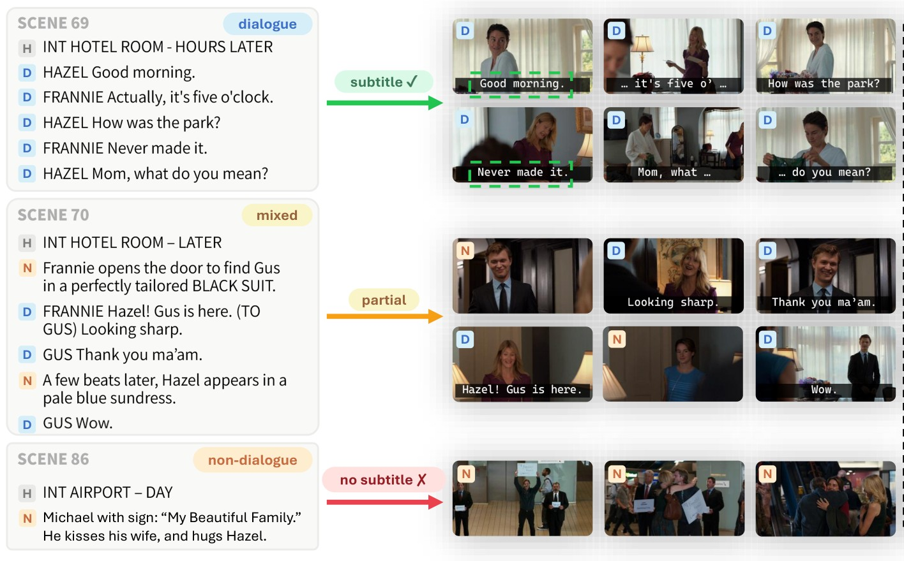

: Does Initial Noise Induce Directional Bias in Vision-Language-Action Models?
Junmyeong Lee, Dongmin Shin, Wooseok Jeon, JunGyu Lee, Seunghyun Shin, Hae-Gon Jeon†
Preprint, 2026
I am an integrated M.S./Ph.D. student in the Department of Artificial Intelligence at Yonsei University and a member of Visual AI Lab, advised by Prof. Hae-Gon Jeon. Previously, I received my B.S. in Electrical Engineering and Computer Science from GIST.
My research interests lie in Vision-Language-Action models and computer vision. Recently I have been working on robot policies that stay reliable when the camera viewpoint changes. I have also worked on dynamic 3D Gaussian Splatting and video understanding.
* equal contribution † corresponding author
Junmyeong Lee, Dongmin Shin, Wooseok Jeon, JunGyu Lee, Seunghyun Shin, Hae-Gon Jeon†
Preprint, 2026
Junmyeong Lee*, Dongmin Shin*, Min-Gyu Park, Wooseok Jeon, Inho Chang, Hae-Gon Jeon†
arXiv preprint, 2026

Jungu Cho, Young-Jae Park, Seong Jong Ha†, Siyeol Kim, Seungho Park, Jisu Shin, Junmyeong Lee, Chaemin Hwang, Hyunjun Jung, Sangeyl Lee, Hae-Gon Jeon†
European Conference on Computer Vision (ECCV), 2026
© 2026 Junmyeong Lee